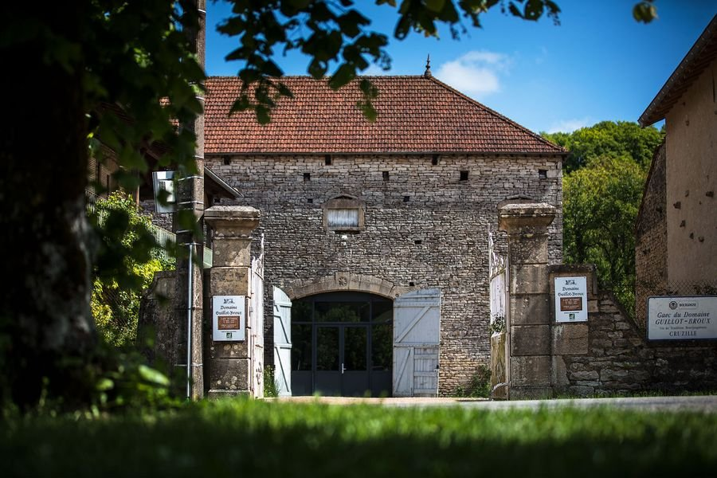

Vins
Mâconnais · Bourgogne · France · Depuis 1978
Domaine
Guillot-Broux
Cruzille · Grévilly · Chardonnay
Pionniers de l'agriculture biologique en Bourgogne depuis 1954, nous exprimons la singularité de chaque terroir dans chacune de nos cuvées.
Certifié AB depuis 1991
17 hectares
Vendanges manuelles
9 cuvées de parcelle
3 villages
Cruzille
Mâcon Cruzille · Bourgogne
Calcaire oolithique très pierreux. Vins d'une grande minéralité, structure incisive.
Grévilly
Mâcon Cruzille
Argilo-calcaire Bathonien profond (3-4m). Vins charmeurs, grande minéralité avec l'âge.
Chardonnay
Mâcon Chardonnay
Argile bleue sur fond calcaire. Exposition sud. Vins concentrés, notes grillées.
La cave
Tous nos vins
Chaque cuvée est l'expression fidèle d'une parcelle unique, vinifiée séparément pour révéler la personnalité de son terroir. Rendements maîtrisés entre 30 et 55 hl/ha.
01
Mâcon Cruzille
Les Perrières
100% Chardonnay · Cruzille · plantation 1978
Calcaire oolithique
Terrasses pierreuses
02
Mâcon Cruzille
Les Geniévrières
100% Chardonnay · Grévilly · plantation 1983
Sol profond 3-4m
Garde 15 ans+
03
Mâcon Cruzille
Les Molières
Chardonnay Muscaté · Grévilly · vignes de 1936
Vieilles vignes 1936
Cépage rare
04
Mâcon Cruzille
Le Clos
Chardonnay non greffé · 18 500 pieds/ha
Non greffé
Pré-phylloxéra
05
Mâcon Cruzille
Clos de la Mollepierre
100% Chardonnay · 3ha · replantation 2011
Ancien clos de Cluny
Sélection massale
06
Mâcon Chardonnay
Les Combettes
100% Chardonnay · Village de Chardonnay
Exposition sud
~7 000 bouteilles
07
Mâcon Villages
Mâcon Villages Blanc
100% Chardonnay · Assemblage · Élevage en cuves
Entrée de gamme
08
Mâcon Cruzille Rouge
Beaumont
100% Gamay · Cruzille · Cordon de Royat
Gamay bourguignon
Poivré & épicé
09
Mâcon Cruzille Rouge
Les Geniévrières
100% Pinot Noir · Grévilly · 3 implantations
Pinot Noir
Élégant & complexe
10
Bourgogne Rouge
La Myotte
100% Pinot Noir · Cruzille · greffons de Pommard
Grands millésimes
Terroir tardif
Accords chefs
"Beaumont est la cuvée emblématique du domaine : un vrai Gamay aux allures bourguignonnes."
Jean Michel Carrette · Aux Terrasses ✶ Tournus
"Le fruit rouge intense de La Myotte accompagne le pigeon à merveille."
Fanny Bellenger · Sommelière
Depuis 2016 — Négoce haute-couture
D'autres appellations,
les mêmes exigences
Pouilly-Fuissé
Négoce · Blanc
Saint-Véran
Négoce · Blanc
Découvrez le domaine & son histoire
Trois générations de vignerons, 17 hectares en agriculture biologique.